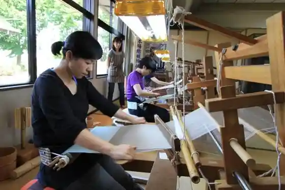
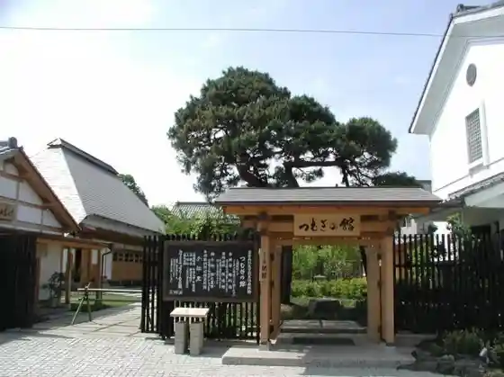
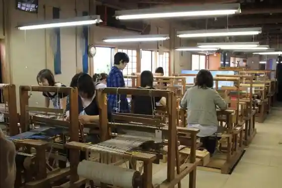
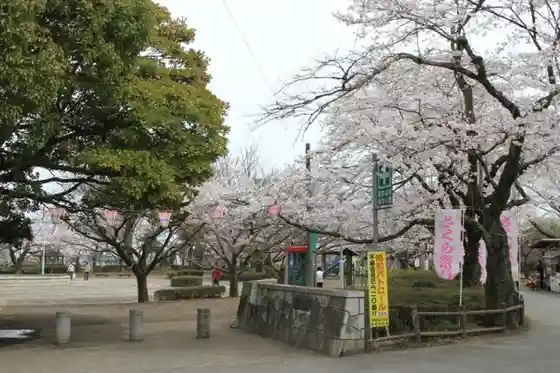

Tabi no Eki Yuki Tsumugi Center
Yuki, Ibaraki · 0296-32-6088 · Official / source link
Yuki Dentokogei Kan
Yuki, Ibaraki · 0296-32-1108 · Official / source link

Tsumugi no Kan
Yuki, Ibaraki · 0296-33-5633 · Official / source link

Tsumugi Village
Yuki, Ibaraki · 0296-32-8002 · Official / source link

Castle Ruins Rekishi Park
Yuki, Ibaraki · 0296-32-1111 · Official / source link

Yuki Kura Bi Kan
Yuki, Ibaraki · 0296-54-5123 · Official / source link
Yuki Shuzo
Yuki, Ibaraki · 0296-33-3344 · Official / source link
Buyu
Yuki, Ibaraki · 0296-33-3343 · Official / source link
JA Kita Tsukuba Famazumagatto (Kiraichi) Yuki Mise
Yuki, Ibaraki · 0296-34-1777 · Official / source link
Kintaro Ramen
Yuki, Ibaraki · 0296-33-4840 · Official / source link
Sushi Kappo Fukumatsu
Yuki, Ibaraki · 0296-32-8402 · Official / source link
Kotobuki Sushi
Yuki, Ibaraki · 0296-33-2621 · Official / source link
Katsu Taro Yuki Mise
Yuki, Ibaraki · 0296-20-8581 · Official / source link
Homba Yuki Tsumugi Kyodo Kan
Yuki, Ibaraki · 0296-32-2121 · Official / source link
DINING ATAGO
Yuki, Ibaraki · 0296-33-7056 · Official / source link
Men Ie Takumi
Yuki, Ibaraki · 0296-33-5234 · Official / source link